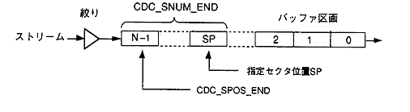
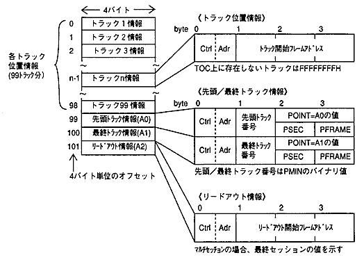
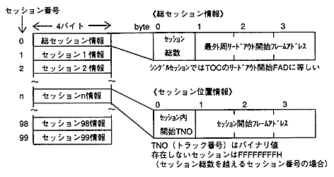
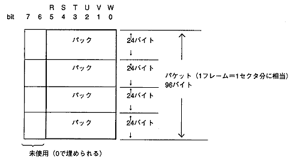
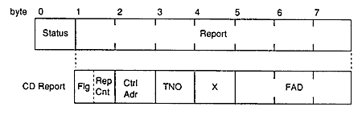

★PROGRAMMER'S GUIDE
★CD通信I/F(CDパート)
★PROGRAMMER'S GUIDE
★CD通信I/F(CDパート)
一 |
Title |
Data |
Data Name |
No |
型 名 | 説 明 |
|---|---|
Uint8 | 符号なし1バイト整数 |
Sint8 | 符号あり1バイト整数 |
Uint16 | 符号なし2バイト整数 |
Sint16 | 符号あり2バイト整数 |
Uint32 | 符号なし4バイト整数 |
Sint32 | 符号あり4バイト整数 |
Boo1 | 論理型4バイト整数（論理定数を値に取る） |
定数名 | 値 | 説 明 |
|---|---|---|
FALSE | 0 | 論理値の偽を表す。 |
OFF | 0 | スイッチオフ（偽）を表す。 |
定数名 | 値 | 説 明 |
|---|---|---|
NULL | （（void＊）0） | NULLポインタ |
一 |
Title |
Data |
Data Name |
No |
bit 7 6 5 4 3 2 1 0
[ ][ ][ ][ ][ ][ ][ ][ ]
| | | | | | | |
| | | | | | | +---- CDC_HIRQ_CMOK 1:コマンド発行可能
| | | | | | +------- CDC_HIRQ_DRDY 1:データ転送準備完了
| | | | | +---------- CDC_HIRQ_CSCT 1:1セクタ読み込み完了
| | | | +------------- CDC_HIRQ_BFUL 1:ＣＤバッファフル
| | | +---------------- CDC_HIRQ_PEND 1:ＣＤ再生終了
| | +------------------- CDC_HIRQ_DCHG 1:ディスク交換の発生
| +---------------------- CDC_HIRQ_ESEL 1:セレクタ設定処理の終了
+------------------------- CDC_HIRQ_EHST 1:ホスト入出力処理の終了
bit 15 14 13 12 11 10 9 8
[-][-][ ][ ][ ][ ][ ][ ]
| | | | | |
| | | | | +---- CDC_HIRQ_ECPY 1:複写／移動処理の終了
| | | | +------- CDC_HIRQ_EFLS 1:ファイルシステム処理の終了
| | | +---------- CDC_HIRQ_SCDQ 1:サブコードＱの更新完了
| | +------------- CDC_HIRQ_MPED 1:ＭＰＥＧ関連処理の終了
| +---------------- CDC_HIRQ_MPCM 1:ＭＰＥＧ動作不良区間の終了
+------------------- CDC_HIRQ_MPST 1:ＭＰＥＧ割り込みステータスの通知
定数名 | 説 明 |
|---|---|
CDC_ERR_OK | 関数が正常終了した。 |
CDC_ERR_CMDBUSY | コマンド発行時、コマンド終了フラグが1になっていない。 |
CDC_ERR_CMDNG | コマンド発行時、CMOKフラグが1になっていない。 |
CDC_ERR_TMOUT | タイムアウトした。（レスポンス待ち、データ転送準備待ち） |
CDC_ERR_PUT | セクタデータの書き込みによるデータ転送準備待ちで、空 |
CDC_ERR_REJECT | コマンドに対するレスポンスがREJECTとなった。 |
CDC_ERR_WAIT | コマンドに対するレスポンスがWAITとなった。 |
CDC_ERR_TRNS | データ転送サイズが異常である。 |
CDC_ERR_PERI | 定期レスポンスを取得できなかった。 |
定数名 | 説 明 |
|---|---|
CDC_SPOS_END | 区画最後のセクタ位置を示す。 |
CDC_SNUM_END | 指定セクタ位置SPから区画最後までのセクタ数を示す。 |

定数名 | 説 明 |
|---|---|
CDC_PARA_DFL | 設定パラメータの省略値指定（0） |
CDC_PARA_NOCHG | 設定パラメータの未変更指定（−1） |
CDC_NUL_SEL | セレクタ番号（絞り番号、バッファ区画番号）の特殊値 |
CDC_NUL_FID | ファイル識別子の特殊値 |
一 |
Title |
Data |
Data Name |
No |


一 |
Title |
Data |
Data Name |
No |
| byte | １ | ２ | ３ | ４ | ５ | ６ | ７ | ８ | ９ | 10 |
||
|---|---|---|---|---|---|---|---|---|---|---|---|---|
| Ctrl Adr |
TNO | X | P_FAD | 00 | Q_FAD | CRC | ||||||
| Ctrl Adr | ：CONTROL/ADRバイト |
| TNO | ：トラック番号(BCDではなくバイナリ値) |
| X | ：インデックス番号(BCDではなくバイナリ値) |
| P_FAD | ：トラック内時間(トラック先頭を0とするフレームアドレス形式) |
| Q_FAD | ：絶対時間(00:00:00を0とするフレームアドレス形式) |
TNO | X | P＿FAD |
|---|---|---|
01H〜63H（1〜99） | 01H〜63H | トラック内の経過FAD |
AAH（リードアウト） | 01H〜63H | トラック内の経過FAD |
00H（リードイン） | 01H〜63H,A0H,A1H,A2H | 000000H |

一 |
Title |
Data |
Data Name |
No |

bit 7 6 5 4 3 2 1 0
[ ][ ][ ][-][ ]
| | | ステータスコード(ＣＤドライブ状態)
| | |
| | +----- CDC_ST_PERI 1:定期レスポンス 0:コマンドの対するレスポンス
| +-------- CDC_ST_TRNS 1:データ転送要求あり 0:要求なし
+----------- CDC_ST_WAIT 1:ＷＡＩＴ（実行保留） 0:ＡＣK（コマンド正常受付）
定数名 | 値 | 状態 | 説 明 |
|---|---|---|---|
CDC_ST_BUSY | 00H | 〈BUSY〉 | 状態遷移中 |
CDC_ST_PAUSE | 01H | 〈PAUSE〉 | ポーズ中（一時停止） |
CDC_ST_STANDBY | 02H | 〈STANDBY〉 | スタンバイ（ドライブ停止状態） |
CDC_ST_PLAY | 03H | 〈PLAY〉 | CD再生中 |
CDC_ST_SEEK | 04H | 〈SEEK〉 | シーク中 |
CDC_ST_SCAN | 05H | 〈SCAN〉 | スキャン再生中 |
CDC_ST_OPEN | 06H | 〈OPEN〉 | トレイが開いている |
CDC_ST_NODISC | 07H | 〈NODISC〉 | ディスクがない |
CDC_ST_RETRY | 08H | 〈RETRY〉 | リードリトライ処理中 |
CDC_ST_ERROR | 09H | 〈ERROR〉 | リードデータエラーが発生した |
CDC_ST_FATAL | 0AH | 〈FATAL〉 | 致命的エラーが発生した |
| byte | １ | ２ | ３ | ４ | ５ | ６ | ７ | |
|---|---|---|---|---|---|---|---|---|
| CD Report | Flg | Rep Cnt | Ctrl Adr | TNO | X | FAD | ||
| Flg | ：ＣＤフラグ （上位４ビット）……〈PLAY〉状態で有効 |
| RepCnt | ：リピート回数（下位４ビット）……通知範囲は0H〜EH |
bit 7 6 5 4 3 2 1 0
[ ][-][-][-][ ]
| リピート回数
|
+----------- CDC_CDFLG_ROM 1:ＣＤ−ＲＯＭデコード中
0:ＣＤ−ＤＡ，シーク，スキャン等
| Ctrl Adr | ：CONTROL/ADRバイト |
| TNO | ：トラック番号 (BCDではなくバイナリ値) サブコードQに基づく |
| X | ：インデックス番号(BCDではなくバイナリ値) |
| FAD | ：フレームアドレス(CD-ROM時はヘッダ情報に、それ以外はサブコードQに基づく) |
状 態 | CDフラグ/リピート | CONTROL/ADR | トラック番号 | インデックス番号 | フレームアドレス |
|---|---|---|---|---|---|
〈BUSY〉 | ○/FFH | ○/FFH | ○/FFH | ○/FFH | ○/FFFFFFH |
〈PAUSE〉 | ○ | ○ | ○ | ○ | ○ |
〈STANDBY〉 | ポーズ時の値 | ポーズ時の値 | ポーズ時の値 | ポーズ時の値 | ポーズ時の値 |
シークホーム時 | FFH | FFH | FFH | FFH | FFFFFFH |
〈PLAY〉 | ○ | ○ | ○ | ○ | ○ |
〈SEEK〉 | ○ | 目標位置 | 目標位置 | 目標位置 | 目標位置 |
〈SCAN〉 | ○ | ○ | ○ | ○ | ○ |
〈OPEN〉 | FFH | FFH | FFH | FFH | FFFFFFH |
〈NODISC〉 | FFH | FFH | FFH | FFH | FFFFFFH |
〈RETRY〉 | ○ | ○ | ○ | ○ | ○ |
〈ERROR〉 | FFH | FFH | FFH | FFH | FFFFFFH |
〈FATAL〉 | 不定 | 不定 | 不定 | 不定 | 不定 |
リピート回数は直前の値が保持されます。別の状態に遷移すると、保持値に戻ります。
シークホームから〈PAUSE〉状態に遷移すると、ディスク先頭（FAD＝150）に移動します。
〈ERROR〉時は直前の値が保持されます。
状態遷移する場合、途中の
必ず〈BUSY〉以外の状態に確定してから、CDレポート内容を参照してください。
★PROGRAMMER'S GUIDE
★CD通信I/F(CDパート)